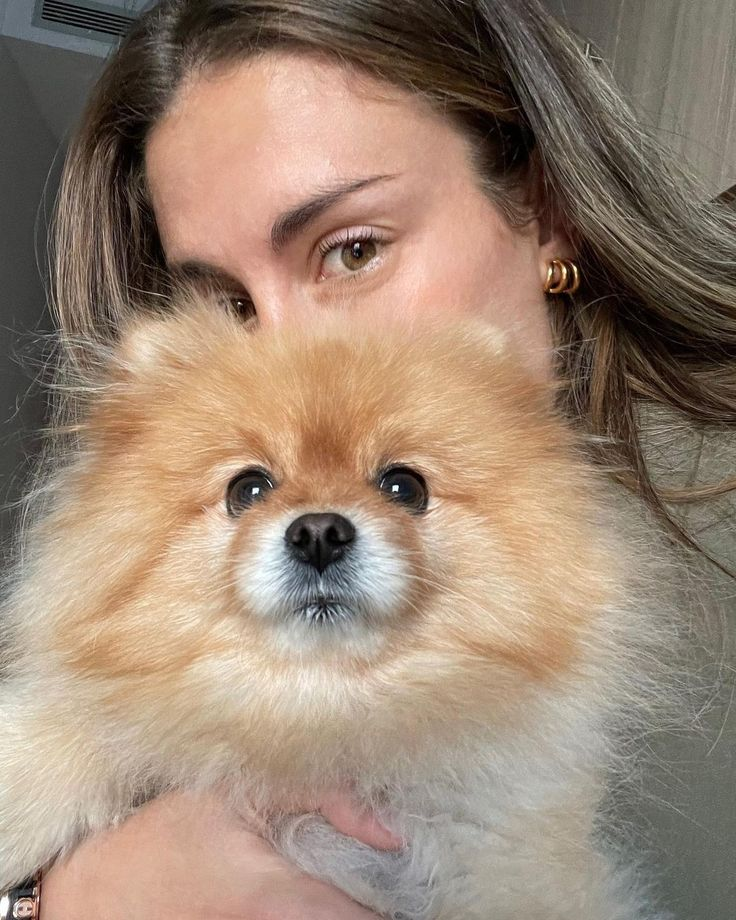

Taustatietoa
Alexia Putellas Segura on espanjalainen jalkapalloilija, pelipaikaltaan keskikenttäpelaaja.
Alexia on syntynyt 4.2.1994 eli hän on tällä hetkellä 29-vuotias.
Hänestä puhutaan maailman parhaana jalkapalloilijana ja hän on saanut urallaan monia palkintoja.
Alexialla on toisiksi eniten esiintymisiä FC Barcelonassa eli 401.
Ura
Alexia Putellas pelaa tällä hetkellä FC Barcelonassa.
Alexia alkoi pelaamaan jalkapalloa seitsemän vuotiaana Sabadell-nimisessä joukkueessa.
Hän siirtyi FC Barcelonan akatemiaan, joka tunnetaan myös nimellä La Masia, 11-vuotiaana.
12-vuotiaana Alexia liittyi mukaan Espanjan nuorten maajoukkueeseen ja onkin pelannut siellä siitä lähtien.
Vuonna 2011 Alexia siirtyi vuodeksi Levanteen, josta hän siirtyi takaisin FC Barcelonaan vuonna 2012.
Alexia tunnetaan FC Barcelonan yhtenä keulakuvana.
Yksityiselämä

Alexia puhuu katalonian kieltä äidinkielenään, mutta on opetellut espanjaa ja englantia koulussa.
Alexialla on myös paljon tatuointeja.
Hän oli suhteessa joukkuelaisensa Jenni Hermoson kanssa, mutta he erosivat.
Alexia menetti nuorena isänsä sydänsairaudelle, jonka vuoksi hän on omistanut maalituuletuksensa edesmenneelle isälleen.
Alexialla on söpö koira nimeltään Nala.
Tärkeimmät saavutukset
- FIFA Women's World Cup: 2023
- UEFA Women's Champions League: 2020–21, 2022–23
- Ballon d'Or Féminin: 2021, 2022
- The Best FIFA Women's Player: 2021, 2022
Joukkuesaavutukset
Yksilösaavutukset
3 syytä käyttää semattisia elementtejä
- Lukuohjelmien on helpompi määrittää tärkeä sisältö nettisivulla ja näin ollen tietää mistä aiheesta nettisivu on.
- Koodia on helppo muokata jälkeenpäin, kun se on selkeästi jaoteltu ja myös lisätä tyylittelyjä.
- Näkörajoitteisten apuohjelmat lukevat nettisivuja semattisten elementtien avulla, joka helpottaa ja nopeuttaa heidän nettisivujen käyttöä.